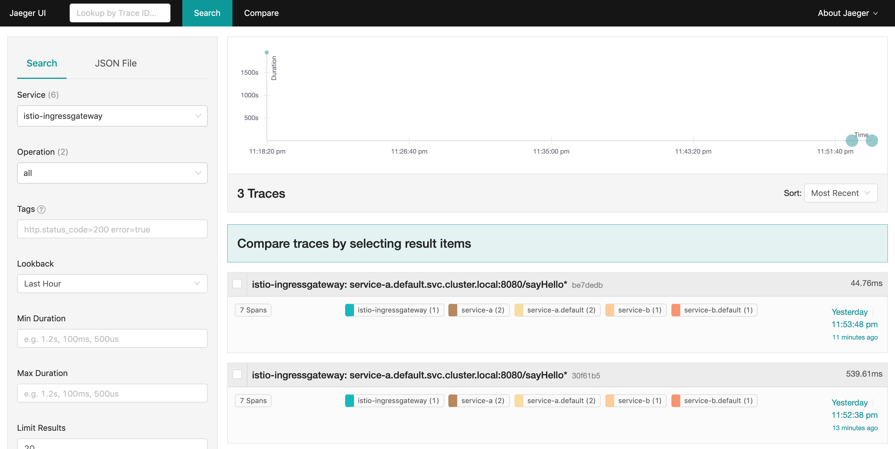
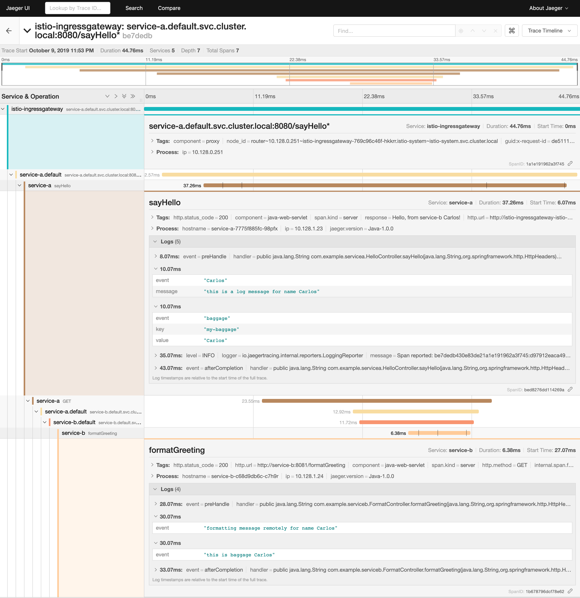

Using Jaeger in Service Mesh(Istio)
General Instructions
-
Clone the git repository
git clone https://github.com/ibm-cloud-architecture/learning-distributed-tracing-101.git -
Change to the lab directory for Java
cd learning-distributed-tracing-101.git/lab-jaeger-istio-java
Installing Service Mesh (Istio) Operator
The following operators and tools are installed and configured as part of the Service Mesh installation:
-
Jaeger operator
-
Prometheus, Grafana, and Kiali
With OpenShift 4, you can use the CodeReady Containers to set up a local development cluster
Verify Service Mesh installation
-
Verify that istio components are installed in the namespace
istio-systemoc get pods -n istio-systemVerify the output:
NAME READY STATUS RESTARTS AGE grafana-cf5ccd86-dtcl8 2/2 Running 0 2m9s istio-citadel-7cb44f4bb-hlzdc 1/1 Running 0 5m42s istio-egressgateway-58f4b474c4-mlj8v 1/1 Running 0 2m50s istio-galley-75599dbc67-ch2tv 1/1 Running 0 4m46s istio-ingressgateway-769c96c46f-dlrv8 1/1 Running 0 2m50s istio-pilot-7bd6bc45cf-rcfdl 2/2 Running 0 3m29s istio-policy-56476c984b-44sw5 2/2 Running 0 4m23s istio-sidecar-injector-55c7bf57-x25rr 1/1 Running 0 2m34s istio-telemetry-d5bbd7d7b-pqv8r 2/2 Running 0 4m23s jaeger-5d9dfdfb67-658t5 2/2 Running 0 4m51s kiali-597c76cc67-5qs2d 1/1 Running 0 52s prometheus-685bdbdc45-rljkq 2/2 Running 0 5m23s -
Verify services in the namespace
istio-systemoc get services -n istio-systemVerify the output:
NAME TYPE CLUSTER-IP EXTERNAL-IP PORT(S) AGE grafana ClusterIP 172.30.100.181 <none> 3000/TCP 21h istio-citadel ClusterIP 172.30.63.141 <none> 8060/TCP,15014/TCP 21h istio-egressgateway ClusterIP 172.30.118.88 <none> 80/TCP,443/TCP,15443/TCP 21h istio-galley ClusterIP 172.30.166.57 <none> 443/TCP,15014/TCP,9901/TCP 21h istio-ingressgateway ClusterIP 172.30.57.186 <none> 15020/TCP,80/TCP,443/TCP,15443/TCP 21h istio-pilot ClusterIP 172.30.231.3 <none> 15010/TCP,15011/TCP,8080/TCP,15014/TCP 21h istio-policy ClusterIP 172.30.118.207 <none> 9091/TCP,15004/TCP,15014/TCP 21h istio-sidecar-injector ClusterIP 172.30.175.36 <none> 443/TCP 21h istio-telemetry ClusterIP 172.30.107.108 <none> 9091/TCP,15004/TCP,15014/TCP,42422/TCP 21h jaeger-agent ClusterIP None <none> 5775/TCP,5778/TCP,6831/TCP,6832/TCP 21h jaeger-collector ClusterIP 172.30.127.247 <none> 9411/TCP,14250/TCP,14267/TCP,14268/TCP 21h jaeger-collector-headless ClusterIP None <none> 9411/TCP,14250/TCP,14267/TCP,14268/TCP 21h jaeger-query ClusterIP 172.30.215.78 <none> 16686/TCP 21h kiali NodePort 172.30.46.193 <none> 20001:32087/TCP 21h prometheus ClusterIP 172.30.5.101 <none> 9090/TCP 21h zipkin ClusterIP 172.30.62.142 <none> 9411/TCP 21h -
Verify that the ServiceMeshMemberRoll includes the target namespace for example
defaultas one of theMEMBERSoc get ServiceMeshMemberRoll -n istio-system NAME MEMBERS default [default bookinfo] -
Verify routes in to the different UI dashboards for Jaeger, Grafana, and Kiali
oc get route -n istio-systemVerify the output, make sure
jaeger-queryis usingedgefor tls termination, if not you can useoc edit service jaeger-query -n istio-systemand change it.NAME HOST/PORT PATH SERVICES PORT TERMINATION WILDCARD grafana grafana-istio-system.apps-crc.testing grafana <all> reencrypt None istio-ingressgateway istio-ingressgateway-istio-system.apps-crc.testing istio-ingressgateway 8080 None jaeger jaeger-istio-system.apps-crc.testing jaeger-query <all> edge None kiali kiali-istio-system.apps-crc.testing kiali <all> reencrypt None prometheus prometheus-istio-system.apps-crc.testing prometheus <all> reencrypt None-
Open the different UIs in the browser using the route’s values for HOST/PORT
-
Deploy the Application
-
Deploy the services
service-aandservice-bUse the file
istio-java.yamlfor JavaHere is an example:
oc apply -f istio-java.yaml -n defaultLet’s look at the file content on how the services are defined to be deployed into OpenShift cluster:
--- --- apiVersion: v1 kind: Service metadata: name: service-a labels: app: service-a spec: ports: - port: 8080 name: http selector: app: service-a --- apiVersion: apps/v1 kind: Deployment metadata: name: service-a labels: app: service-a version: v1 spec: replicas: 1 selector: matchLabels: app: service-a template: metadata: labels: app: service-a version: v1 annotations: sidecar.istio.io/inject: "true" spec: containers: - name: app image: csantanapr/service-a-java-istio #image: image-registry.openshift-image-registry.svc:5000/default/service-a-java-istio env: - name: JAEGER_ENDPOINT value: http://jaeger-collector.istio-system.svc:14268/api/traces - name: JAEGER_PROPAGATION value: b3 - name: SERVICE_FORMATTER value: service-b imagePullPolicy: Always ports: - containerPort: 8080 --- apiVersion: v1 kind: Service metadata: name: service-b labels: app: service-b spec: ports: - port: 8081 name: http selector: app: service-b --- apiVersion: apps/v1 kind: Deployment metadata: name: service-b labels: app: service-b version: v1 spec: replicas: 1 selector: matchLabels: app: service-b template: metadata: labels: app: service-b version: v1 annotations: sidecar.istio.io/inject: "true" spec: containers: - name: app image: csantanapr/service-b-java-istio #image: image-registry.openshift-image-registry.svc:5000/default/service-b-java-istio env: - name: JAEGER_ENDPOINT value: http://jaeger-collector.istio-system.svc:14268/api/traces - name: JAEGER_PROPAGATION value: b3 imagePullPolicy: Always ports: - containerPort: 8081In the yaml deployment manifest there are few items to point out:
-
Ports
-
The port for the container is specified in the service and the container in the deployment, for example,
service-awith port8080andservice-bwith port8081
-
-
Environment Variables
-
The variable
JAEGER_ENDPOINTis specified to indicate to the Jaeger client library to send the traces using HTTP to the jaeger collector servicehttp://jaeger-collector.istio-system.svc:14268/api/tracesthat is deployed on the namespaceistio-system. -
The variable
SERVICE_FORMATTERused byservice-ato indicate the hostname ofservice-bthat will use to format the hello message. -
The variable
JAEGER_PROPAGATIONis set tob3this is necessary because the Envoy proxy does not recognize Jaeger’s default on-the-wire representation of the trace context, but it does recognize Zipkin’s B3 headers. This configuration instructs the Jaeger tracer to use B3 headers instead of its default ones.
-
-
Istio has certain specific requirements the ones we used in our yaml manifest are the following
-
Named service ports
-
The service port name starts with
http
-
-
Deployment with app and version labels
-
The Pod template should have the following labels defined
appandversion
-
-
-
-
The
pom.xmlfor each service contains the dependency for Zipkin to handle the B3 headers that Istio Envoy proxy forwards, this way allowing for end to end propagation. The source code is available in their respective directoriesservice-aandservice-b, the dependencies related to opentracing in the filepom.xmlfor the service looks like this:<dependency> <groupId>io.opentracing</groupId> <artifactId>opentracing-api</artifactId> <version>0.33.0</version> </dependency> <dependency> <groupId>io.opentracing.contrib</groupId> <artifactId>opentracing-spring-cloud-starter</artifactId> <version>0.3.7</version> </dependency> <dependency> <groupId>io.jaegertracing</groupId> <artifactId>jaeger-client</artifactId> <version>1.0.0</version> </dependency> <dependency> <groupId>io.jaegertracing</groupId> <artifactId>jaeger-zipkin</artifactId> <version>1.0.0</version> </dependency> -
Deploy the Istio Gateway and VirtualService
oc apply -f gateway.yaml -n defaultHere is the content of
gateway.yamlapiVersion: networking.istio.io/v1alpha3 kind: Gateway metadata: name: distributing-tracing-gateway spec: selector: istio: ingressgateway # use istio default controller servers: - port: number: 80 name: http protocol: HTTP hosts: - "*" --- apiVersion: networking.istio.io/v1alpha3 kind: VirtualService metadata: name: distributing-tracing spec: hosts: - "*" gateways: - distributing-tracing-gateway http: - match: - uri: prefix: /sayHello route: - destination: host: service-a port: number: 8080 -
Verify services are deployed and running:
oc get all -l app=service-a -n default oc get all -l app=service-b -n default NAME READY STATUS RESTARTS AGE pod/service-a-74cd5c6496-nvllm 2/2 Running 0 6m7s pod/service-b-674f96464b-hbmg7 2/2 Running 0 6m44s NAME TYPE CLUSTER-IP EXTERNAL-IP PORT(S) AGE service/service-a ClusterIP 172.30.44.43 <none> 8080/TCP 6m7s service/service-b ClusterIP 172.30.115.93 <none> 8081/TCP 6m45s NAME READY UP-TO-DATE AVAILABLE AGE deployment.apps/service-a 1/1 1 1 6m7s deployment.apps/service-b 1/1 1 1 6m44sNotice that under the
READYcolumn for pods, it shows that there are two (2/2) containers running, one of them is the istio side card proxy. -
Get the hostname for the Istio ingress gateway
oc get route -n istio-system istio-ingressgateway NAME HOST/PORT PATH SERVICES PORT TERMINATION WILDCARD istio-ingressgateway istio-ingressgateway-istio-system.apps-crc.testing istio-ingressgateway 8080 None -
Use curl or open a browser with the endpoint URL using the HOST/PORT of the route
curl http://istio-ingressgateway-istio-system.apps-crc.testing/sayHello/CarlosNotice in the output that the message was formatted by service-b
Hello, from service-b Carlos!From the result, you can see that
service-acallsservice-band replies back. -
In the Jaeger UI select
istio-ingressgatewayorservice-aand click Find TracesYou can see 7 Spans in a single trace starting from the
istio-ingressgatewayending inservice-b.default -
Click on one of the traces and expand the spans in the trace
Check one of the labs Lab Jaeger - Node.js or lab-java-jaeger-java.adoc for a more in-depth lab for Opentracing with Jaeger.
-
In the Kiali UI select Graph to see a topology view of the services, you can enable traffic animation under Display to see the flow of HTTP requests

-
In the Grafana UI select the Dashboard Istio Workload Dashboard or Istio Service Dashboard to see monitoring and metrics data for your services